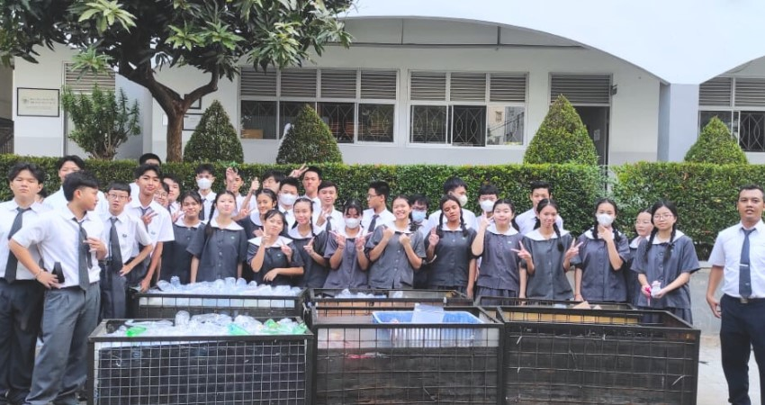
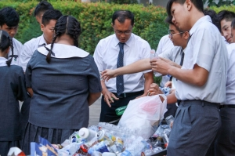

Data Sistem Informasi Pengelolaan Sampah Nasional (SIPSN) Kementerian Lingkungan Hidup dan Kehutanan (KLHK) tahun 2022 hasil input dari 202 kab/kota se Indonesia menyebut jumlah timbunan sampah nasional mencapai angka 21.1 juta ton. Dari total produksi sampah nasional tersebut, 65.71% (13.9 juta ton) dapat terkelola, sedangkan sisanya 34,29% (7,2 juta ton) belum terkelola dengan baik.

Sekolah Cinta Kasih Tzu Chi menyediakan fasilitas dan lingkungan belajar untuk membentuk lulusan yang berkarakter mulia, bijak, sehat secara fisik, memiliki kehidupan sosial yang harmonis, dan menjunjung tinggi nilai-nilai humanisme.
Oleh karena itu, sekolah Cinta Kasih Tzu Chi program dan pembelajaran yang mendukung hal tersebut, salah satunya adalah program GPL (Gerakan Peduli Lingkungan).
Program GPL ini dilakukan setiap hari Selasa dan Jumat. Program ini dilakukan agar siswa/i bisa mengurangi sampah yang dibuang setiap harinya, dengan mendaur ulang sampah tersebut menjadi barang yang lebih berguna. Program ini dilakukan dengan cara mengumpulkan sampah daur ulang yang ada di rumah ke kotak yang telah disediakan.
Gerakan Peduli Lingkungan (GPL) adalah inisiatif yang bertujuan untuk meningkatkan kesadaran masyarakat terhadap pentingnya menjaga dan melestarikan lingkungan hidup. Tujuan utama dilakukannya GPL, yaitu:
1.Meningkatkan Kesadaran Lingkungan
Mengedukasi masyarakat tentang pentingnya melestarikan lingkungan dan dampak buruk dari kerusakan lingkungan.
2.Mengurangi Pencemaran Lingkungan
Melibatkan masyarakat dalam upaya mengurangi polusi udara, air, dan tanah melalui berbagai aktivitas seperti pengelolaan sampah, daur ulang, dan penggunaan energi bersih.
3.Mendorong Gaya Hidup Ramah Lingkungan
Mengajak masyarakat untuk mengadopsi kebiasaan yang berkelanjutan, seperti hemat energi, menanam pohon, dan mengurangi penggunaan plastik.
4.Melestarikan Sumber Daya Alam
Memastikan penggunaan sumber daya alam secara bijak agar dapat dinikmati oleh generasi mendatang.
5.Mendorong Partisipasi Komunitas
Melibatkan berbagai kelompok masyarakat, dari individu hingga komunitas, dalam upaya menjaga lingkungan melalui kegiatan seperti gotong royong, kampanye, dan pelatihan.
6.Mencegah Perubahan Iklim
Mengurangi emisi gas rumah kaca dan mendukung inisiatif global untuk mengatasi perubahan iklim.
“Cara kita berterima kasih dan membalas budi baik bumi adalah dengan tetap bertekad melestarikan lingkungan.” -Master Cheng Yen
Artikel lainnya :cintakasihtzuchi